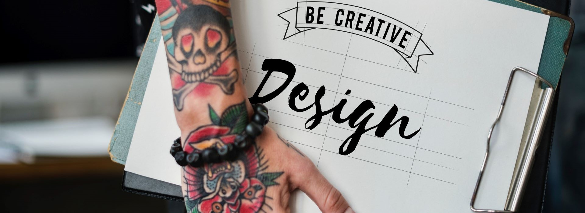

Portofoliu profesional Sofia Dragomir

Salut! Mă numesc Sofia Dragomir, am 32 de ani, sunt un pasionat designer interior cu o viziune unică și creativă. Am absolvit la Colegiul Național „ Horea, Cloșca și Crișan”, Alba-Iulia. Pasiunea mea pentru desen a existat încă de la o vârstă fragedă. Am absolvit la Universitatea Tehnică din Cluj-Napoca, Facultatea de Arhitectură și am dobândit cunoștințe solide în domeniul designului interior. De-a lungul anilor, am lucrat la diverse proiecte de design interior pentru toate camerele unei case. Am colaborat cu clienți pentru a crea spații funcționale și estetice, adaptate nevoilor și gusturilor lor. Am adunat o colecție impresionantă de proiecte în portofoliul meu, de la amenajări rezidențiale elegante până la spații comerciale moderne. Fiecare proiect reflectă atenția mea la detalii și abilitatea de a îmbina estetica cu funcționalitatea. De asemenea, am avut oportunitatea de a lucra la proiecte de restaurare și renovare a clădirilor istorice, unde am pus accent pe conservarea patrimoniului și valorificarea frumuseții lor autentice. Sper că această informație adițională să ofere o perspectivă mai amplă asupra experienței mele în arhitectură și design interior.
.jpg)
Cu experiența și pasiunea mea pentru design interior, ofer servicii complexe care vor aduce spațiile tale la viață. În calitate de designer, abordez fiecare proiect cu atenție la detalii și o viziune creativă, astfel încât rezultatul final să reflecte perfect stilul și personalitatea ta distincte. Indiferent dacă este vorba despre un birou modern, o locuință confortabilă sau o sală de expoziții sofisticată, mă angajez să colaborez strâns cu tine pentru a înțelege nevoile și preferințele tale. Fiecare proiect începe cu o analiză atentă a spațiului și o discuție despre obiectivele tale. Cu aceste informații, îmi voi aduce experiența și creativitatea în joc pentru a concepe un design unic și impresionant. Fiecare detaliu, de la alegerea culorilor și a texturilor până la aranjarea mobilierului și iluminat, va fi atent pus în valoare pentru a crea o armonie vizuală și funcțională. Rezultatul final va fi un portofoliu de proiecte diversificate și inovatoare, menite să atragă atenția și să impresioneze orice privitor. Cu fiecare spațiu transformat într-o adevărată operă de artă, vei beneficia nu doar de estetică, ci și de funcționalitate îmbunătățită și confort sporit.
Camera de zi este amenajată cu O canapea gri din material texturat sau din piele moale adaugă o notă de eleganță și confort în camera de zi, servind drept centrul spațiului pentru relaxare și socializare. Pereții albi luminează încăperea, creând o atmosferă luminoasă și spațioasă. Un ceas de perete, poate un model minimalist sau vintage, aduce un element practic și stilat, marcând timpul într-un mod subtil și rafinat. Decorurile, precum tablourile abstracte sau fotografii artistice, oferă personalitate și adâncime spațiului, iar plantele verzi aduc o notă de prospețime și natură în interior, contribuind la crearea unei atmosfere relaxante și plăcute.
Bucătăria are pereți albi și mobilier alb, lumina abundentă se reflectă în întreaga încăpere, conferind un aspect aerisit și luminos. Pereții albi amplifică senzația de spațiu și prospetime, creând o bază perfectă pentru orice stil de decor. Mobilierul alb, fie că vorbim despre o masă elegantă, scaune moderne sau dulapuri cu un design minimalist, completează această estetică curată și contemporană. Blatul de lucru poate fi din marmură albă sau un alt material lucios pentru a accentua simplitatea și eleganța spațiului. Accentele colorate, precum vasele cu flori proaspete sau obiectele de bucătărie în nuanțe vibrante, adaugă un plus de vitalitate.
Holul este un spațiu primitorcu un parchet în nuanțe călduroase de maro, se conturează o atmosferă primitoare și elegantă. Textura și tonurile parchetului adaugă o senzație plăcută de căldură și rafinament spațiului. Pe peretele bej se regăsesc două tablouri artistice, fie că sunt abstracte sau reprezentative, aducând un strop de personalitate și adâncime estetică. O lampa plasată pe un suport de lemn completează atmosfera printr-o lumină caldă și plăcută, oferind, de asemenea, un accent de rustic sau natural în contrast cu finisajele moderne sau clasice ale încăperii. Prin combinarea elementelor decorative, holul devine primitor.
Aceasta este baie spațioasă cu gresie maro adaugă o notă de cald și rafinament. O cabină de duș generoasă, într-un design transparent și modern, devine punctul central al încăperii, aducând o senzație de spațiu și lumină. Pereții maro, fie că sunt placați cu gresie sau în această culoare, accentuează tonurile calde și creează un cadru elegant pentru amenajarea băii. O chiuvetă mare, albă sau cu accente de maro, completează atmosfera, oferind funcționalitate și un stil clasic. Aceste elemente se îmbină armonios pentru a crea o baie spațioasă și sofisticată, unde combinația de culori și elemente de design oferă un spațiu reconfortant și modern.
Cu experiența și pasiunea mea pentru design interior, ofer servicii complexe care vor aduce spațiile tale la viață. În calitate de designer, abordez fiecare proiect cu atenție la detalii și o viziune creativă, astfel încât rezultatul final să reflecte perfect stilul și personalitatea ta distincte. Indiferent dacă este vorba despre un birou modern, o locuință confortabilă sau o sală de expoziții sofisticată, mă angajez să colaborez strâns cu tine pentru a înțelege nevoile și preferințele tale. Fiecare proiect începe cu o analiză atentă a spațiului și o discuție despre obiectivele tale. Cu aceste informații, îmi voi aduce experiența și creativitatea în joc pentru a concepe un design unic și impresionant. Fiecare detaliu, de la alegerea culorilor și a texturilor până la aranjarea mobilierului și iluminat, va fi atent pus în valoare pentru a crea o armonie vizuală și funcțională. Rezultatul final va fi un portofoliu de proiecte diversificate și inovatoare, menite să atragă atenția și să impresioneze orice privitor. Cu fiecare spațiu transformat într-o adevărată operă de artă, vei beneficia nu doar de estetică, ci și de funcționalitate îmbunătățită și confort sporit.
Programul meu ca designer interior în Cluj-Napoca este construit pe principii solide de creativitate, inovație și atenție la detalii. Îmi dedic timpul și expertiza pentru a înțelege cu atenție nevoile și preferințele fiecărui client, transformându-le în spații captivante și funcționale. Cu o abordare personalizată și orientată spre colaborare, mă străduiesc să aduc în prim-plan viziunile și aspirațiile clienților într-un mod care să reflecte identitatea și gusturile lor unice.
Mă poți găsi aici.Programul meu de contact pentru servicii de design interior în Alba-Iulia este flexibil și adaptabil nevoilor clienților. Ofer consultanță și colaborare personalizată în amenajarea și transformarea spațiilor în medii plăcute și funcționale. Cu un accent deosebit pe înțelegerea preferințelor și necesităților individuale ale fiecărui client, abordarea mea se bazează pe comunicare deschisă și clară pentru a obține rezultate care să depășească așteptările.
Mă poți găsi aici.